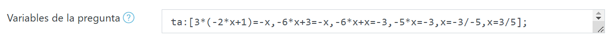
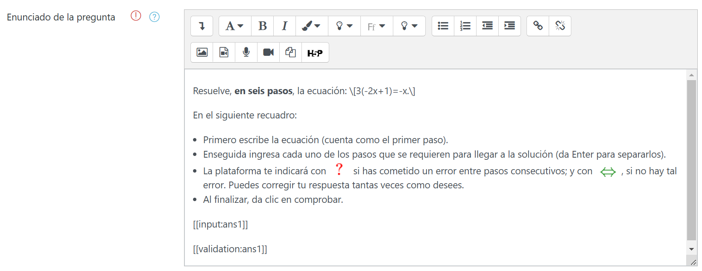
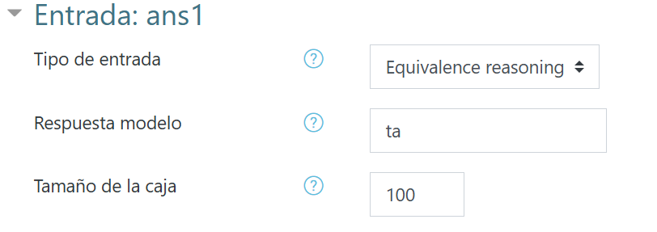
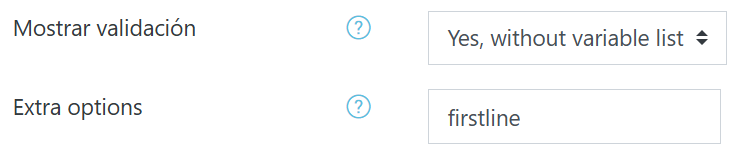
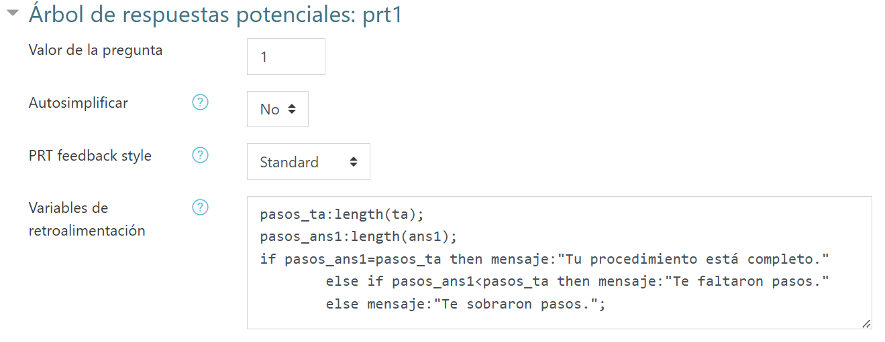
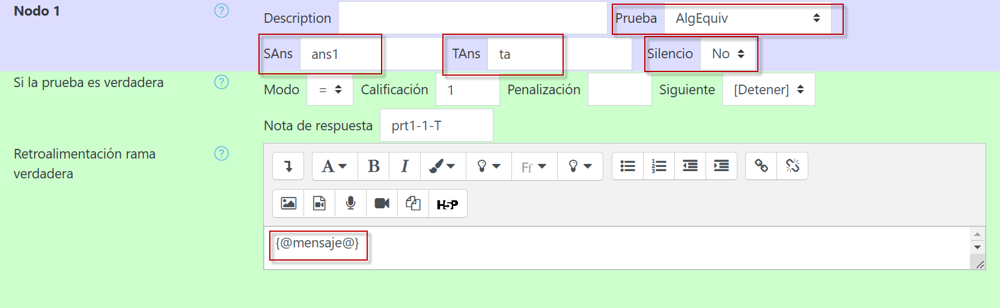
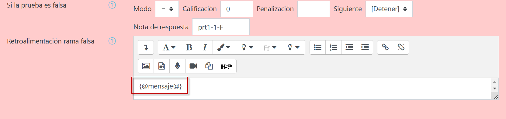
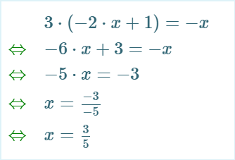
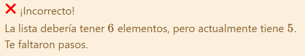

Un primer acercamiento
Ejemplo
Supongamos que deseamos que los alumnos resuelvan la ecuación lineal \[3(-2x+1)=-x.\] Es previsible que éstos pueden llegar a la solución por cualquiera de estos dos caminos:
Solución 1
\begin{aligned}3(-2x+1)&=-x\\-6x+3&=-x&\text{1.a Propiedad distributiva}\\-6x+x&=-3&\text{1.b Agrupación de variables y términos independientes}\\-5x&=-3&\text{1.c Simplificación}\\x&=\frac{-3}{-5}&\text{1.d Despeje de la variable}\\x&=\frac{3}{5}. &\text{1.e Leyes de los signos}\end{aligned}
Solución 2
\begin{aligned}3(-2x+1)&=-x\\-2x+1&=\frac{-1}{3}x&\text{1.a División de la ecuación por 3}\\-2x+\frac{1}{3}x&=-1&\text{1.b Agrupación de variables y términos independientes}\\ \frac{-5}{3}x&=-1&\text{1.c Simplificación}\\x&=\frac{-3}{-5}&\text{1.d Despeje de la variable}\\x&=\frac{3}{5}.&\text{1.e Leyes de los signos}\end{aligned}
Los pasos de cada camino son una expresión equivalente del problema original con la misma solución. Observemos también que la segunda solución es relativamente infrecuente, ya que los alumnos suelen evitar los quebrados a toda costa. De manera que, por ahora, nos concentraremos en la primera solución.
Configuración inicial
Crearemos una nueva pregunta en STACK y capturaremos el siguiente código en el campo Variables de la pregunta:
ta:[3*(-2*x+1)=-x,-6*x+3=-x,-6*x+x=-3,-5*x=-3,x=-3/-5,x=3/5];

ta es una lista que contiene cada paso esperado que los estudiantes deben mostrar para llegar a la respuesta final.
Ahora, en Enunciado de la pregunta, capturaremos el siguiente texto:

En Entrada, capturaremos lo siguiente y seleccionaremos las siguientes opciones:


La opción extra firstline se utiliza para que la primera línea que introduzca el estudiante sea la de la ecuación original, a efecto de que caiga en cuenta de que está resolviendo el ejercicio correcto.
Ahora bien, en el Árbol de respuestas potenciales, deberán seleccionarse las siguientes opciones:

El código que capturado en Variables de retroalimentación no es indispensable, pero servirá para complementar la retroalimentación automática brindada por STACK para este tipo de preguntas por medio de un mensaje condicional.
Finalmente, nos aseguraremos de que los nodos 1 y 2 estén configurados del siguiente modo:


Notemos que hemos seleccionado como prueba AlgEquiv puesto que esto nos permite dar por válido tanto el procedimiento empleado en la Solución 1 como en la Solución 2. Asimismo, no hemos optado por silenciar la pregunta para ver la retroalimentación que STACK brinda por default para este tipo de reactivo.
Visualización y resultado
Una vez guardados los cambios, ingresemos a la Vista previa de la pregunta e introduzcamos una respuesta incompleta. Por ejemplo,
3(-2x+1)=-x
-6x+3=-x
-5x=-3
x=-3/-5
x=3/5
en donde falta el paso de la agrupación. Conforme se escriba el procedimiento, STACK nos hará saber si el razonamiento equivalente entre líneas es el adecuado:

No obstante, al Comprobar, STACK arrojará la siguiente retroalimentación por default, seguida del mensaje complementario condicional programado por nosotros:

Ahora que, si se ingresan todos los pasos de la Solución 1 o la Solución 2, se obtendrá un acierto... ¡Inténtalo y compruébalo!